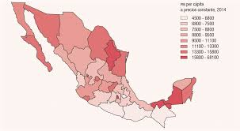

| Con frecuencia se escucha decir que poblacion y desarrollo son elementos indisolublemente unidos, son terminos de una misma ecuacion. Basta un ligero vistazo a las estadisticas mundiales para darse cuenta de la estrecha correlacion que existe entre ellos: los paises que tienen mas elevados indices de desarrollo son los que mantienen tasas de crecimiento mas reducidas, en tanto que, paradojicamente, los paises con menor desarrollo son los que crecen mas rapidamente, inundandose, por asi decirlo, en un verdadero diluvio humano. (Ver Cuadro No 1.)
En naciones con altos indices de natalidad y con una expectativa de vida relativamente baja, en comparacion con las potencias industrializadas mas de un 30 por ciento de la poblacion es menor de 10 anos, lo cual significa que no participan activamente en el proceso productivo. Si se compara este dato con el proporcionado para los paises desarrollados, se encuentra que estos ultimos tienen una poblacion menor de 10 anos que fluctua entre el 15 y 18 por ciento. Es decir, la poblacion economicamente activa es mas significativa en los paises ricos que en los pobres. (Figueroa M., Gallardo I. y Lafarga, J., 1977: 10.)
A lo largo del siglo XX, la poblacion mundial se ha mas que cuadruplicado y sigue aumentando en unos 80 millones cada ano, por lo que puede duplicarse de nuevo en pocas decadas. Es preciso por ello valorar el papel de esta explosion demografica, junto al hiperconsumo de una quinta parte de la humanidad, en la actual situacion de autentica emergencia planetaria, asi como reclamar la desaparicion de las leyes que criminalizan en muchos paises los medios mal llamados anticonceptivos. Medios gracias a los cuales las concepciones pueden ser el fruto de decisiones responsables y no la consecuencia indeseada del desconocimiento o de la imposicion de fundamentalismos religiosos que exigen asociar sexualidad exclusivamente a procreacion.
Se trata de una preocupacion frecuentemente aireada por los medios de comunicacion y que conviene abordar. Se ha llegado incluso a afirmar, en un informe de la ONU sobre la evolucion de la poblacion activa, que se precisa un minimo de 4 a 5 trabajadores por pensionista para que los sistemas de proteccion social puedan mantenerse. Por ello se teme en muchos paises desarrollados que, dada su baja tasa de natalidad (numero de nacidos vivos en un aoo por cada 1.000 habitantes) o, mas precisamente, baja tasa de fecundidad (numero de nacimientos con vida en un ano por cada 1.000 mujeres de edades comprendidas entre los 15 y los 49 anos)- esta proporcion entre trabajadores activos y jubilados descienda muy rapidamente, haciendo imposible el sistema de pensiones.

|
|